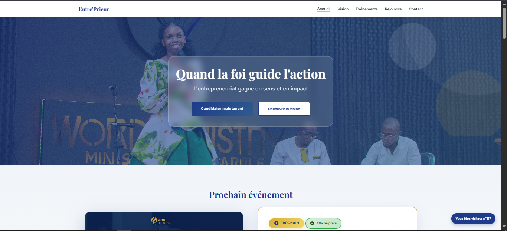

Entre'Prieur - Site Web Communautaire
HTML5 CSS3 JavaScript Responsive Netlify
Site web vitrine professionnel développé pour Mima Steeve et la communauté Entre'Prieur. Plateforme digitale rassemblant les entrepreneurs chrétiens africains autour de valeurs de foi, discipline et excellence. Inclut gestion d'événements, système d'inscription, newsletter et présentation des partenaires communautaires.